Ford Explorer ST 2023
Jeden z najmocniejszych i najbardziej charakterystycznych dużych SUV-ów dostępnych na rynku amerykańskim.
Explorer w pełnej wersji ST łączy rodzinne, przestronne wnętrze z osiągami, których zdecydowanie nie kojarzymy z typowym 7-osobowym SUV-em. Pod maską pracuje 3.0 V6 EcoBoost Twin Turbo o mocy 400 KM, połączone z 10-biegową automatyczną skrzynią.
Dlaczego warto postawić właśnie na ten egzemplarz:
• Pełnoprawna wersja ST – nie ST-Line – z silnikiem 3.0 V6 EcoBoost
• 400 KM i ok. 563 Nm – bardzo dobre osiągi jak na SUV tej wielkości
• Napęd 4WD i 10-biegowa automatyczna skrzynia SelectShift
• Sportowe dodatki ST – czarne felgi, czerwone zaciski, cztery końcówki układu wydechowego i emblematy ST
• Duży pionowy ekran systemu multimedialnego
Co warto wiedzieć:
• Przestronne wnętrze i trzy rzędy siedzeń sprawiają, że auto świetnie sprawdza się również na długich trasach
• USA Spec oferuje konfigurację, która na polskim rynku jest zdecydowanie mniej popularna
• Egzemplarz do pełnej weryfikacji historii oraz ewentualnych szkód przed zakupem
Stan:
- Odpala i jeździ, mechanicznie sprawny
- Zadbane wnętrze w bardzo dobrej kondycji
- Egzemplarz do pełnej weryfikacji przed zakupem
Lokalizacja: USA
Analiza historii pojazdu dostępna — przebieg, właściciele, historia szkód oraz pełna kalkulacja importu.
Szacowany zysk Pod Dom vs rynek PL: 20–45 tys. zł. Dokładną kalkulację przygotujemy indywidualnie — z rozbiciem na wszystkie koszty.
Zadzwoń:
Pełna kalkulacja przed zakupem. Żadnych ukrytych kosztów po fakcie.
Wybrane oferty z Ameryki, Dubaju oraz EU publikowane są w zamkniętych grupach na WhatsApp AutoStany.
Wejdź na grupy i kliknij obserwuj, aby być na bieżąco.
Grupa Ameryka
https://whatsapp.com/channel/0029Vb7ggYbCRs1nGUnDna13
Grupa Zjednoczone Emiraty Arabskie (Dubaj)
https://whatsapp.com/channel/0029VbBJ429JP2127CJwkg1D
Grupa Klasyki
https://whatsapp.com/channel/0029Vb7dnC4BFLgXTc7SpS20
Grupy mają charakter selektywny.
Dostęp przyznawany jest etapami.
496 opinii na 4 platformach (4.8) · 2200+ sprowadzonych aut · https://autostany.pl/o-nas
Od wyboru auta po rejestrację w Polsce — w 4 krokach, bez niespodzianek.
Szczegóły procesu importu: https://autostany.pl/wiedza/import-auta-z-usa-krok-po-kroku
Tel:
AutoStany · ul. Chorągwi Pancernej 55, Warszawa · Pn–Pt 8–20
Ogłoszenie ma charakter informacyjny i nie stanowi oferty handlowej w rozumieniu art. 66 §1 KC.
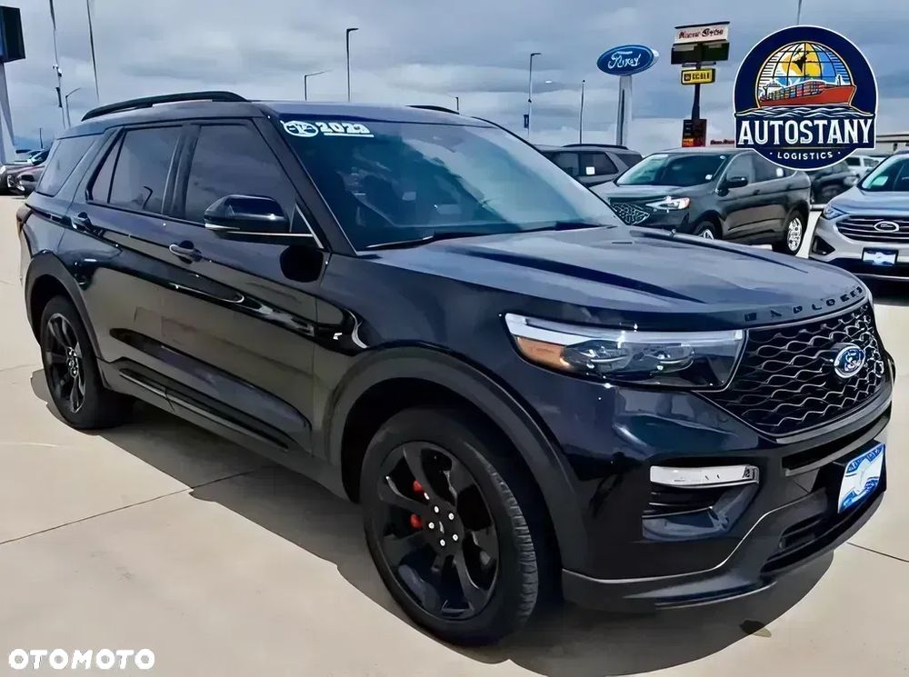
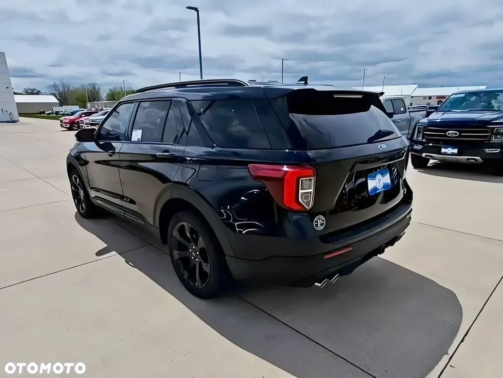
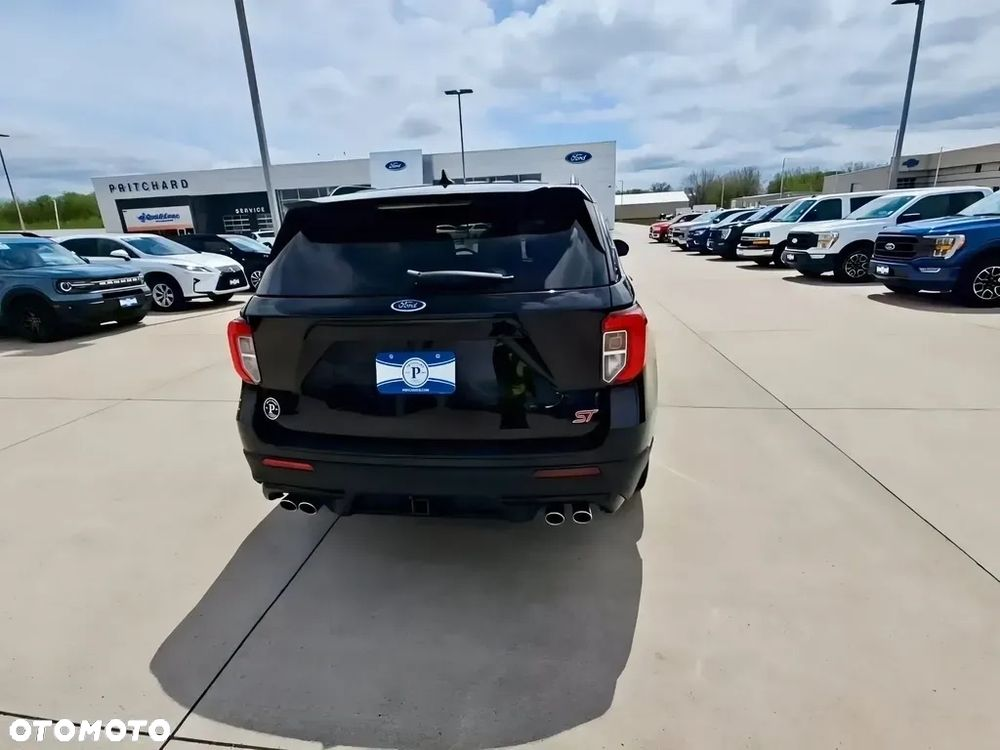
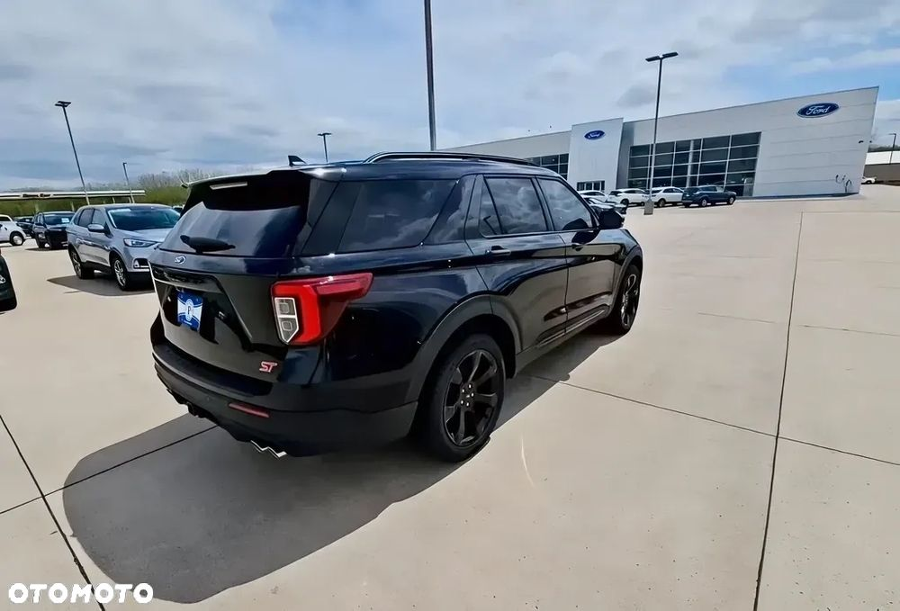
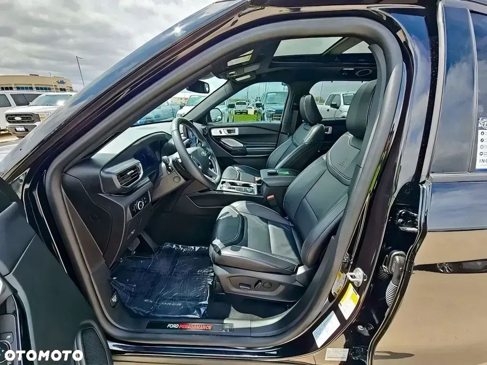
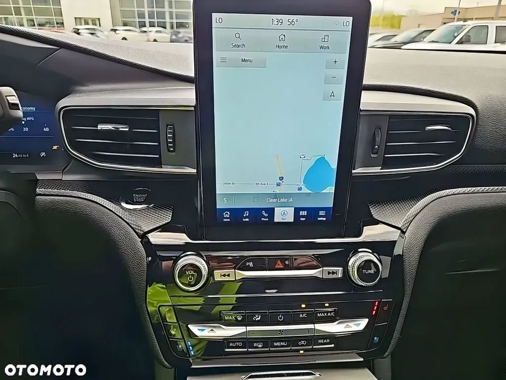
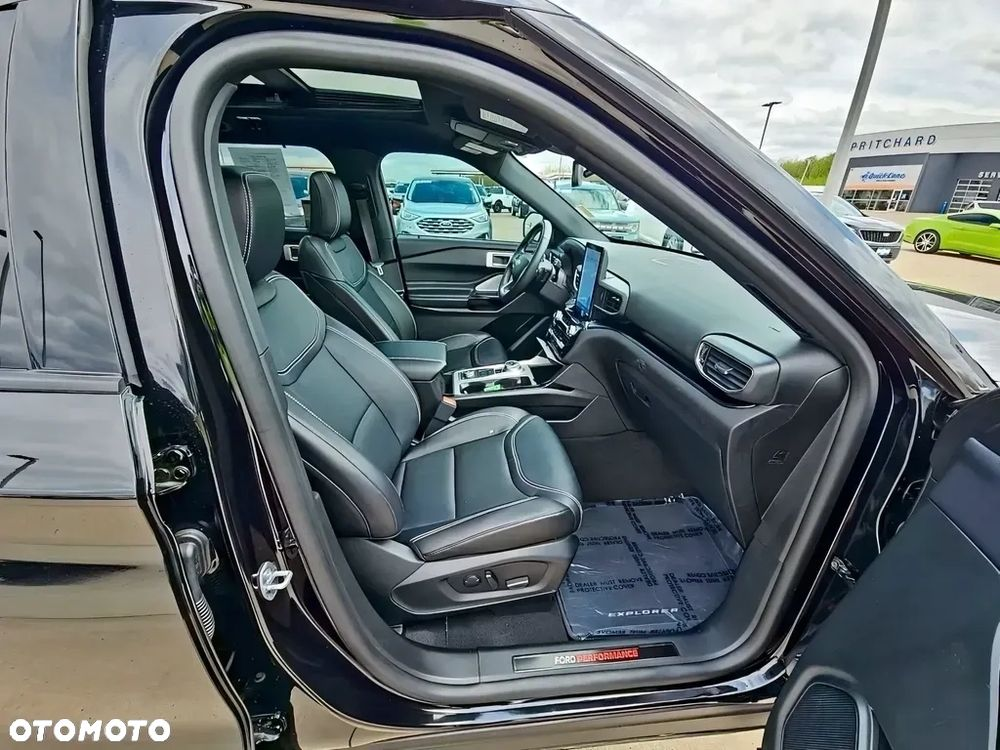
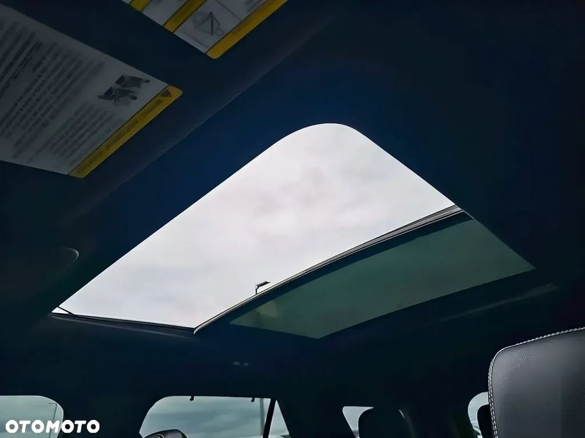
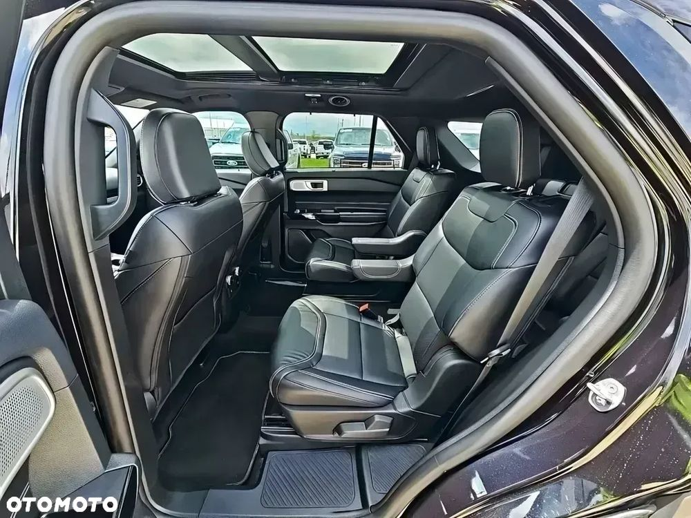
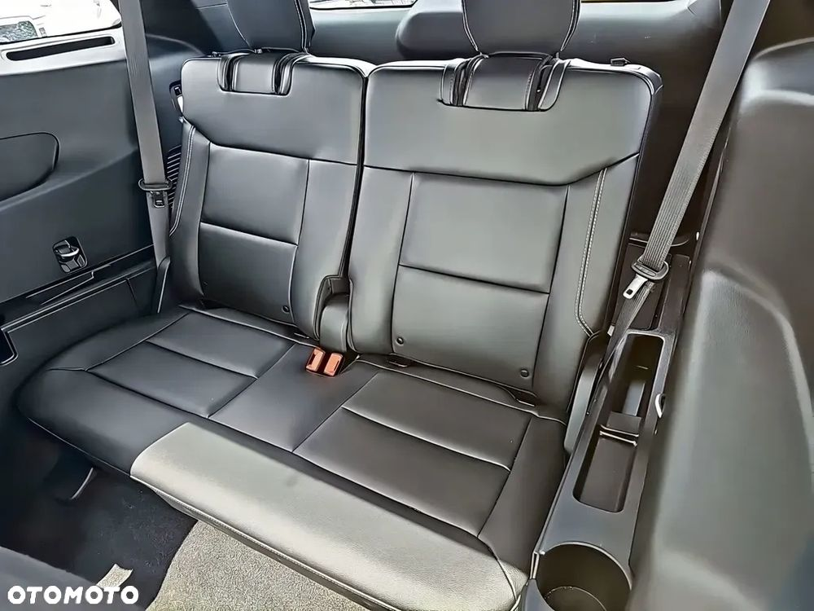
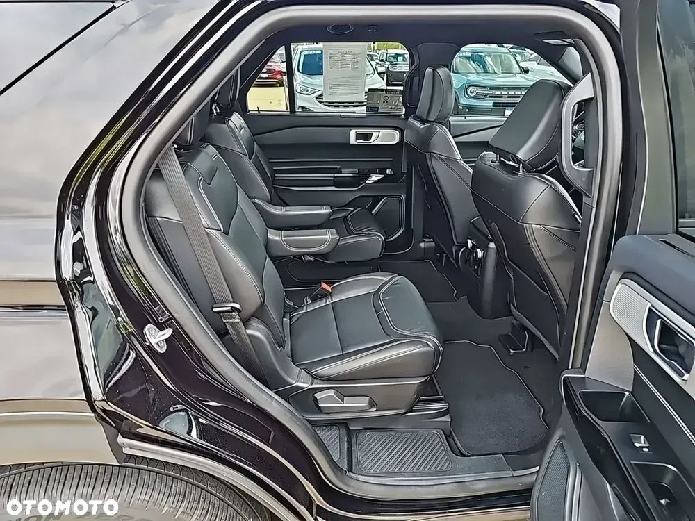
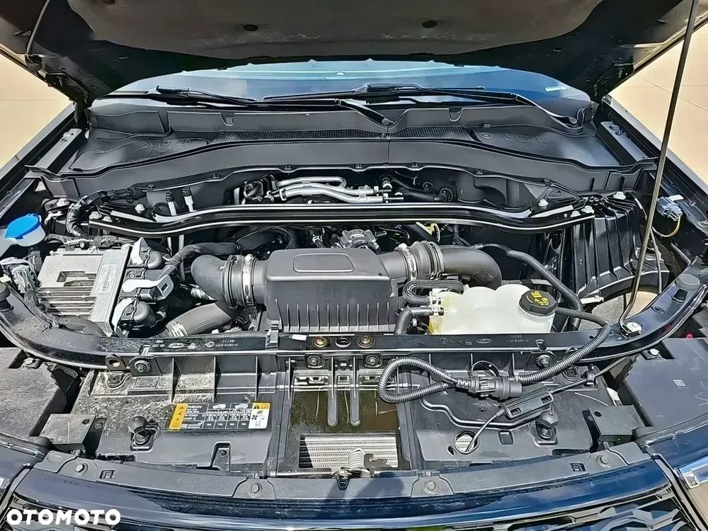